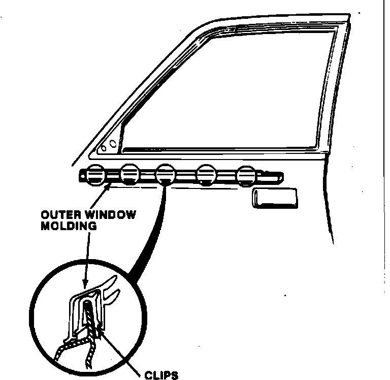
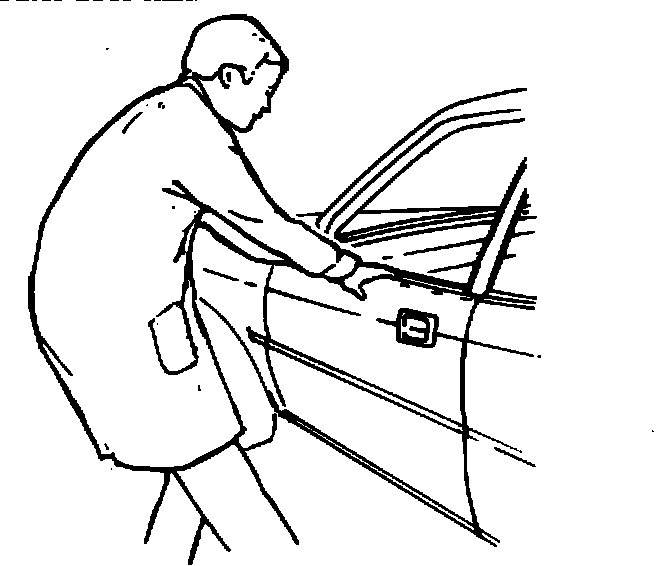
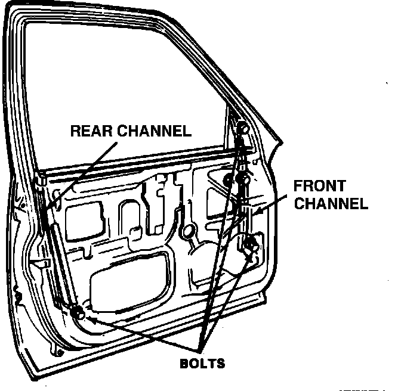
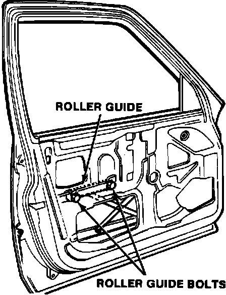

Door Window - Irregular Operational Speed
88acura01February 7, 1988
YEAR MODEL APPLICATION
ALL LEGEND ALL
87-036
Irregular Window Speed (Supersedes 87-036, dated December 7, 1987)
SYMPTOM
The window speed varies while the window is being raised or lowered.

CORRECTIVE ACTION
1. Remove the door trim panel and the door window.
2. Replace the glass run channel with the appropriate part listed under PARTS INFORMATION.
3. Reinstall the window.
4. Using a long flat-blade screwdriver, remove the outer window molding by prying up at the rear edge of the door.
CAUTION: Pry carefully to avoid damaging the clips.

5. Grasp the outer door skin at the center of the window sill, and pull away from the car until the curvature of the door conforms with the curvature of the glass.
CAUTION: Pull carefully to avoid deforming the outer door skin.

6. Lower the window and loosen the four bolts holding the front and rear channels.

7. Raise the window halfway and loosen the roller guide bolts. Adjust the roller guide to a position where it is not binding.
8. Retighten the bolts and check for ease of window operation. Readjust the roller guide if necessary.
9. Spray the vertical sections of the glass run channel with silicone lubricant. Lubricate the roller guide with general purpose grease.
10. Reassemble the door.
PARTS INFORMATION Glass run channel P/N:
72275-SD4-003 (left, front) 72235-SD4-003 (right, front) 72775-SD4-003 (left, rear) 72735-SD4-003 (right, rear)
WARRANTY CLAIM INFORMATION
Operation number: 827135
Flat rate time: 0.8 hr. for first door A - Add 0.8 hr. for two doors B - Add 1.6 hrs. for three doors C - Add 2.4 hrs. for four doors
Failed part P/N: 72275-SD4-003 (left, front)
72235-SD4-003 (right, front) 72775-SD4-003 (left, rear) 72735-SD4-003 (right, rear)
Defect code: 030
Contention code: B02